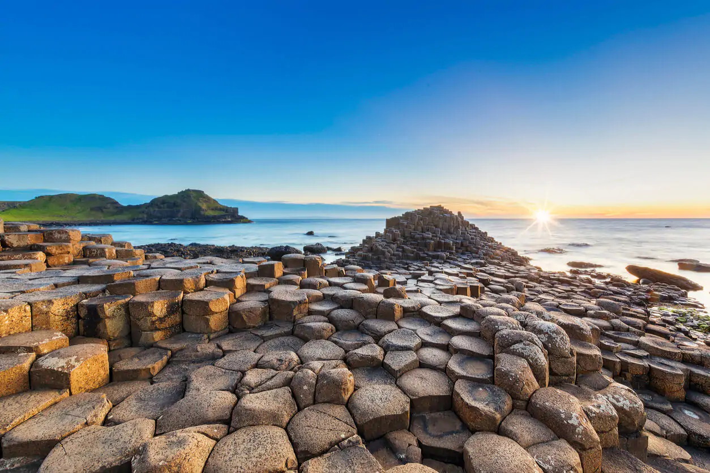

Giants Causeway

The Giant's Causeway (Irish: Clochán an Aifir) is an area of about 40,000
interlocking basalt columns, the result of an ancient volcanic fissure
eruption. It is located in County Antrim on the north coast of Northern
Ireland, about three miles (4.8 km) northeast of the town of Bushmills.
It was declared a World Heritage Site by UNESCO in 1986 and a national
nature reserve by the Department of the Environment for Northern Ireland
in 1987. In a 2005 poll of Radio Times readers, the Giant's Causeway was
named the fourth-greatest natural wonder in the United Kingdom.
The tops of the columns form stepping stones that lead from the cliff foot
and disappear under the sea. Most of the columns are hexagonal, although
some have four, five, seven, or eight sides. The tallest are about 12
metres (39 ft) high, and the solidified lava in the cliffs is 28 metres
(92 ft) thick in places.
Much of the Giant's Causeway and Causeway Coast World Heritage Site is
owned and managed by the National Trust. It is one of the most popular
tourist attractions in Northern Ireland, receiving over 998,000 visitors
in 2019. Access to the Giant's Causeway is free of charge: it is not
necessary to go via the visitor centre, which charges a fee. The remainder
of the site is owned by the Crown Estate and several private landowners.
Geology
Around 50 to 60 million years ago, during the Paleocene Epoch, Antrim was
subject to intense volcanic activity, when highly fluid molten basalt
intruded through chalk beds to form an extensive volcanic plateau. As the
lava cooled, contraction occurred. Horizontal contraction fractured in a
similar way to drying mud, with the cracks propagating down as the mass
cooled, leaving pillarlike structures, which also fractured horizontally
into "biscuits". In many cases, the horizontal fracture resulted in a
bottom face that is convex, while the upper face of the lower segment is
concave, producing what are called "ball and socket" joints. The size of
the columns was primarily determined by the speed at which lava cooled.
The extensive fracture network produced the distinctive columns seen
today. The basalts were originally part of a great volcanic plateau called
the Thulean Plateau, which formed during the Paleocene.
In respect of its key role in the development of volcanology as a
geoscience discipline, and notably the origin of basalt, the Palaeocene
rocks of the Giant's Causeway and Causeway Coast were included by the
International Union of Geological Sciences (IUGS) in its assemblage of 100
"geological heritage sites" around the world in a listing published in
October 2022.
Tourism
The Bishop of Derry visited the site in 1692. The existence of the
causeway was announced to the wider world the following year by the
presentation of a paper to the Royal Society from Sir Richard Bulkeley, a
fellow of Trinity College, Dublin. The Giant's Causeway received
international attention when Dublin artist Susanna Drury made watercolour
paintings of it in 1739; they won Drury the first award presented by the
Royal Dublin Society in 1740 and were engraved in 1743. In 1765, an entry
on the causeway appeared in volume 12 of the French Encyclopédie, which
was informed by the engravings of Drury's work; the engraving of the "East
Prospect" appeared in a 1768 volume of plates published for the
Encyclopédie. In the caption to the plates, French geologist Nicolas
Desmarest suggested, for the first time in print, that such structures
were volcanic in origin.
The site first became popular with tourists during the 19th century,
particularly after the opening of the Giant's Causeway Tramway, and only
after the National Trust took over its care in the 1960s were some of the
vestiges of commercialism removed. Visitors can walk over the basalt
columns that are at the edge of the sea, a half-mile walk from the
entrance of the site.
he causeway was without a permanent visitor centre between 2000 and 2012,
as the previous building, built in 1986, burned down in 2000. While
preliminary approval was given for a publicly funded (but privately
managed) development by then Environment Minister and DUP member Arlene
Foster in 2007, the public funding was frozen due to a perceived
conflict-of-interest between the proposed private developer and the DUP.
Ultimately, the private developer dropped a legal challenge to the
publicly funded plan, and the new visitor centre was officially opened by
2012. Its construction was funded by the National Trust, the Northern
Ireland Tourist Board, the Heritage Lottery Fund and public donations.
Since opening, the new visitor centre has garnered mixed reviews from
those visiting the causeway, for its pricing, design, contents and
placement across the causeway walk descent. In 2018, the visitor centre
was visited by 1,011,473 people.
There was some controversy regarding the content of some exhibits in the
visitor centre, which refer to the Young Earth Creationist view of the age
of the Earth. While these inclusions were welcomed by the chairman of the
Northern Irish evangelical group, the Caleb Foundation, the National Trust
stated that the inclusions formed only a small part of the exhibition and
that the Trust "fully supports the scientific explanation for the creation
of the stones 60 million years ago." An online campaign to remove
creationist material was launched in 2012, and following this, the Trust
carried out a review and concluded that they should be amended to have the
scientific explanation on the causeway's origin as their primary emphasis.
Creationist explanations are still mentioned but presented as a
traditional belief of some religious communities rather than a competing
explanation for the causeway's origins.